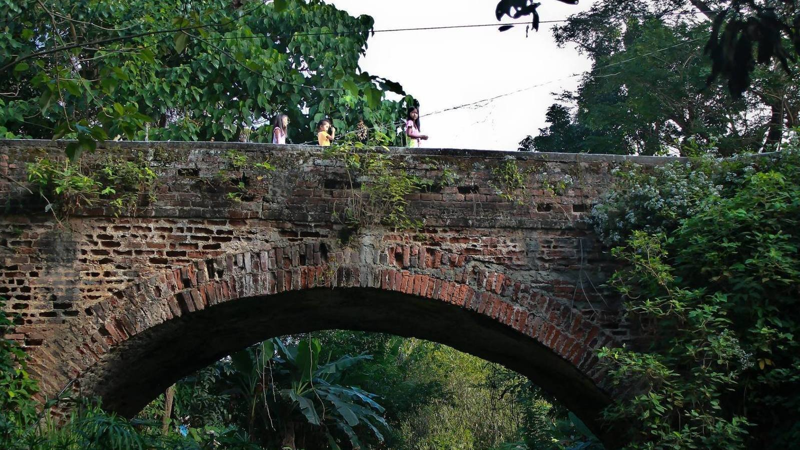

Home
About Us
Destinations
Contact Us

Dampol Bridge
located in Dupax Del Sur, Nueva Vizcaya
This nearly two century old, single arch unreinforced bridge that spans the Abanatan Creek which divides Brgy. Dopaj and Brgy. Dumang, was built in 1818 by the Isinai and other indigenous groups living in the area. Its red-colored bricks were made from an old adobe workshop near the church, when Spanish Dominican friar Fr. Francisco Rocamora was vicar.